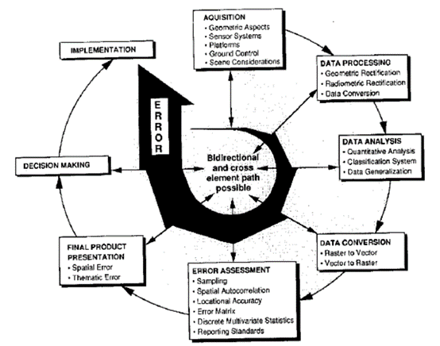
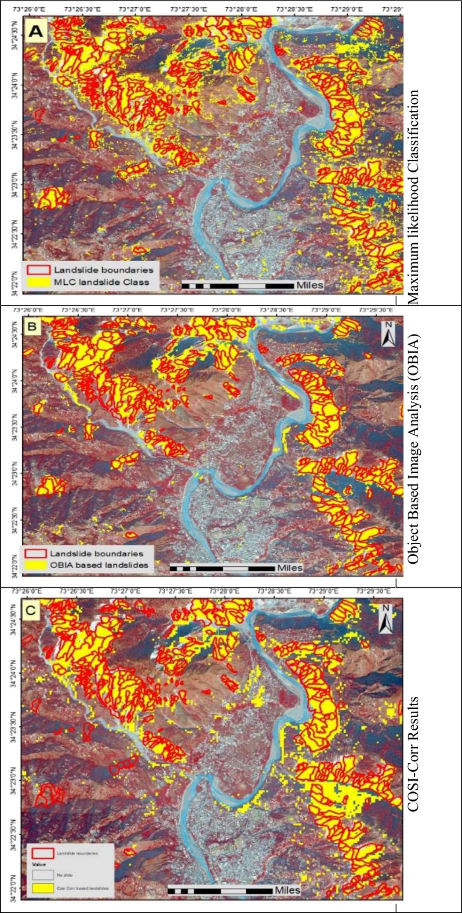

8 Week8 Classification II
8.1 Summary
8.1.1 How to consider / process EO data？
8.1.1.1 Object-based Image Analysis
It is a method for classifying satellite imagery by segmenting neighboring pixels into objects using pre-segmented objects, it works opposite to pixel analysis.
Traditional pixel based image classification assigns a land cover category to each pixel. All pixels have the same size, the same shape and do not have any notion of neighbours. However, OBIA segments images into small pixels that form vector objects. The segmentation is not based on each pixel, but automatically digitises the image for you.
8.1.1.2 Sub-pixel Analysis
It is pixel-based image classification. A sub-pixel is a virtual pixel defined between two actual pixels in an image capture sensor. To improve the resolution or image quality, sub-pixel calculation is very useful. We can infer a more accurate object location in terms of sub-pixel resolution, i.e. the accuracy is higher than that of the pixel width and is a fraction of the pixel size with non-integer coordinates. It is also suitable for detecting objects smaller than pixel size.
8.1.2 How to access the accuracy?
Accuracy defines a measure of the clarity or certainty of a measurement. In remote sensing, we focus on the following accuracy values:
8.1.2.1 User’s accuracy
UA calculates the probability that a spatial data unit classified on a map or image actually represents a specific category on the ground. It can be referred to as reliability. The formula is as follows:
\(User's Accuracy=\frac{Ture Positive}{Ture Positive + False Positive}\)
8.1.2.2 Producer’s accuracy
PA is calculated in a similar way to UA, the only difference being that it calculates the ratio of the total number of pixels in which the category is correctly classified to the total number of pixels in that category in the classification map. The formula is as follows:
8.1.2.3 Kappa
Kappa is a measure of the difference between the observed agreement between two maps as reported by the diagonal entries in the error matrix. Expresses the accuracy of the image compared to chance results, which ranges from 0 to 1, with the following formula:
One of the advantages of using this approach is that we can statistically compare two categorised products. For example, two classification maps can be produced using different algorithms and we can validate them using the same reference data.
It is used to compare two error matrices; to weight the cells in the error matrix according to the severity of misclassification; and to provide error ranges for accuracy.
8.1.2.4 F1-Score (or F Measure)
It is a combination of UA and PA and is a measure of predictive performance. The formula is as follows:
The highest possible value of 1.0 for the F-score indicates perfect precision and recall; if precision or recall is zero, the lowest possible value is zero. ## Applications

8.2 Applications
Policymakers need timely and accurate information on landslides in order to respond effectively and quickly to disasters triggered by the same earthquake or rainfall. Remote sensing technologies can provide rapid disaster response at local to regional scales, especially in remote, isolated and inaccessible locations. These techniques are categorised into pixel-based, sub-pixel-based and object-based techniques, each with their own advantages and disadvantages.
Saba et al., (2023) used all three of these methods for the detection of co-seismic landslides in Muzaffarabad (Little Himalayas), Pakistan. Ultimately, it was found that all three techniques can automatically detect co-seismic landslides with different levels of accuracy and associated limitations.
The pixel-based MLC classification system identified the least number of landslides, but with the worst results and accuracy, which is in line with the study of Martha et al., (2010), both suggesting that landslides are much more similar to other geographic entities in the spectrum, thus making it difficult to avoid spectral overlap effects.
The OBIA technique will produce good results, but only if fine spatial resolution images are used, which makes the technique somewhat expensive. COSI-Corr produces better results because landslide detection becomes more robust once the changing pixels are identified, using spectral information. The advantage is that it works at the sub-pixel level, eliminating the interference caused by mixed pixels. On the other hand, it utilises temporal changes to identify newly triggered co-seismic or active landslides more effectively than OBIA. The COSI-Corr-based technique is more suitable and cost-effective for detecting co-seismic landslides than MLC and OBIA.

8.3 Reflections
This would be my first exposure to subpixel analysis for learning, and I was intrigued by the technique’s ability to recognise multiple feature information within a single pixel. This method is particularly suitable for dealing with scenes that have poorly defined feature boundaries or severe mixed-pixel problems, and greatly improves the ability to parse remotely sensed images.
Overall, these learning experiences have not only enhanced my technical skills in remote sensing, but also stimulated me to think broadly about the future of remote sensing applications. I look forward to applying this knowledge to practical projects to solve more complex geographic and environmental problems.
8.4 References
Characterising spectral, spatial and morphometric properties of landslides for semi-automatic detection using object-oriented methods’. Geomorphology, 116 (1), pp. 24–36. doi: 10.1016/j.geomorph.2009.10.004.
Saba, S. B., Ali, M., Turab, S. A., Waseem, M. and Faisal, S. (2023). ‘Comparison of pixel, sub-pixel and object-based image analysis techniques for co-seismic landslides detection in seismically active area in Lesser Himalaya, Pakistan’. Natural Hazards, 115 (3), pp. 2383–2398. doi: 10.1007/s11069-022-05642-y.